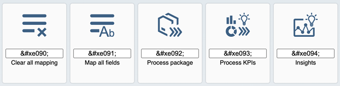

|
The |
|
Upgrade to New jQuery Version We have upgraded the third-party jQuery library from jQuery 2.2.3 to jQuery 3.5.1. Several measures have been implemented to make this new version of jQuery delivered with SAPUI5 as compatible to the previous version as feasible. In particular, we have introduced a compatibility layer to ensure that most of your existing application or control code won't need adjustment. This could, however, introduce incompatibilities to the new jQuery version. For more information, see Upgrading from a Version Below 1.82 to understand any current and possible future impact. |
|
Badge Implementation Badges display very short and important information that attracts the user’s attention. We have made improvements in these controls to implement badge:
|
|
Five New Icons Available in the SAP Fiori Tools Icon Font  Find the icon that fits your needs via the SAPUI5 Icon Explorer. |
|
SAPUI5 OData V2 Model With the new version of the SAPUI5 OData V2 model, we introduced the new
Depending on their format options, some composite types, such as
|
|
SAPUI5 OData V4 Model The new version of the SAPUI5 OData V4 model introduces the following features:
Restriction
Due to the limited feature scope of this
version of the SAPUI5 OData V4 model, check that all required features are in place
before developing applications. Double-check the detailed
documentation of the features, as certain parts of a feature may
be missing. While we aim to be compatible with existing
controls, some controls might not work due to small
incompatibilities compared to
For more information, see OData V4 Model, the API Reference, and the Samples in the Demo Kit. |
To display dates in a standardized format, the following calendar and fiscal OData V4 annotations are now supported:
|
|
The look and feel of the Adapt Filters dialog has been improved and now shows the filtered content in a popup with collapsible groups of filter fields that are connected semantically. This way you can, for example, easily find a field label that occurs in several places in the dialog. You can also toggle between all available filter fields and the ones that are actually visible. The design of the dialog has also been simplified in some other places, for example, the arrangement of the buttons for further actions. For more information, see the Sample. |
|
We have introduced the option to set
|
sap.ui.integration.widgets.CardWe have updated the UI5 Web Components dependency of the Adaptive Cards to the v1.0.0-rc.8 version. With this update the Adaptive Cards receive the theming and custom theming support. Now you can use both High Contrast Black and High Contrast White themes, or add a custom theme, as the Web Components are compatible with the UI Theme Designer tool. For more information, see the High Contrast Black and the High Contrast White samples in the Card Explorer. |
|